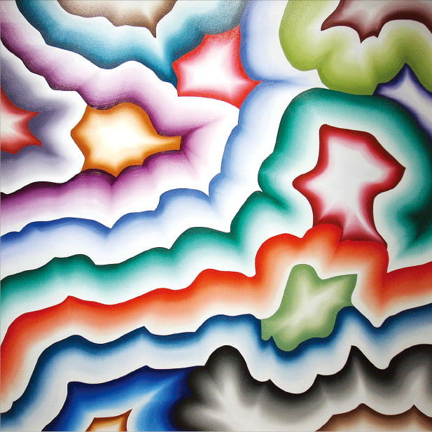

이스라엘을 대표하는 세계적인 팝아티스트이다. 이 작가의 대표적인 작업방식은 컷아웃(cut-out)이다. 이 방식으로 인해 작품은 조각의 입체성과 회화의 평면성이라는 양면적 특성을 모두 획득하게 되었고, 회화와 조각의 중간 지대에 위치하고 있다. 또한, 표현 방식과 주제 선택에 있어 전통적 매체의 한계를 극복하였다. 화사한 색채와 과감한 붓터치로 회화적 물성을 가져오면서도 컷아웃된 판을 적층하여 조각적 공간감도 드러내는 것이 특징이다.